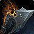
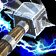

圣盾术
3.5 分钟 · 持续 8 秒
免疫一切伤害。主要留给雷暴区点到你的闪电涌流（7 秒引导，8 秒圣盾盖得住）。开场用掉没关系，只要距雷暴区还有 3.5 分钟以上。
红玉新生法池的压力集中在多段全队群伤与高压点名：开场、火焰区、柯姬雅地狱烈火以及递增易伤波次，圣佑术约 1 分钟一次按压力分段交；圣盾术优先留给雷暴区点到你的闪电涌流。辅助位有两件事每把都要做：梅莉杜莎战给坦克交自由祝福清掉冰寒利爪层数，基拉卡战把牺牲祝福给中了烈焰喷吐的队友。
四张手牌、一条硬限制，外加五个必断读条。
免疫一切伤害。主要留给雷暴区点到你的闪电涌流（7 秒引导，8 秒圣盾盖得住）。开场用掉没关系，只要距雷暴区还有 3.5 分钟以上。
受到伤害 −20%，外加复仇之盾吸收盾。全本主力减伤，转好就交给高压群伤或点名：采掘冲击、钢铁弹幕、冰霜过载、地狱烈火、熔火血脉、闪电涌流、烈焰喷吐。
队友受到的伤害 −30%，这部分转给你承担。给中了活动炸弹或烈焰喷吐、正在掉血的队友。
免疫移动限制。梅莉杜莎战给坦克，清掉叠起来的冰寒利爪并在 8 秒内不再叠层（配合无拘自由同步清掉自己身上的层数）。
一场 +23 限时单场实录（展示真实冷却节奏，非每波强制照搬；具体取舍见下方路线）。
看到什么 → 按什么 → 为什么。带「必做」标签的高亮行是每把必做的关键动作。伤害数字是 +23 实测（含被吸收的部分），层数越高越大。


取自限时录像的天赋。复制字符串，在游戏天赋界面点「导入」。
CYEAAAAAAAAAAAAAAAAAAAAAAAAAAAwoZZbmZWGzYGAAAAAAzUmlZYmx2Y2GmZbGjxYYGLsBgZZ2mZmtGAAAYBwAgxMbAzYmZDYmZYMjBD
这几个防御/功能天赋不要动
常见可换：迅捷审判 ↔ 圣光的正义、奋发卫士 ↔ 福佑召唤，都不影响上面的防御牌。